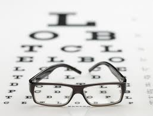

What dou you want to know about us

Our sight is so important to us and yet many people fail to look after their eye health which unfortunately can lead to sight impairment or even vision loss. The Eye Doctors of Ireland encourage people to take positive steps to protect their sight, an action aimed at ultimately improving the nation's eye health and contributing towards a reduction in avoidable sight loss. Regular sight tests are essential for maintaining healthy eyes. More than half of all sight loss is avoidable when detected early and a regular eye test can identify early indications of eye diseases such as cataract, glaucoma, diabetes and Age-Related Macular Degeneration (AMD). The following are other steps you can take to ensure you are taking better care your eyes:
